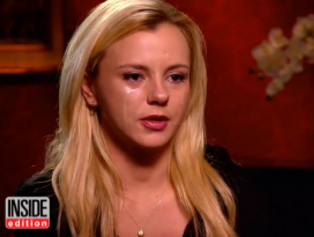

< < < Back
Porn Star Bree Olson Complains That People Think She’s A Slut – Return Of Kings
Media outlets across the US are giving fawning attention and victimhood to “former” porn star and apparent new feminist icon, Bree Olson. Why? Because, as she explains in the video below, everyone she knows now seems to think she’s a slut. While she claims to be coming out with her story as a warning to young women, her courting of the press appears to be an attempt to kickstart new income opportunities.
Olson, you may remember, was one of Charlie Sheen’s so-called goddesses during his highly publicized time as a warlock-with-tiger-blood after being fired from sitcom Two and a Half Men. Even as she decries the “sexism” she is somehow facing by being called a slut, she is still spruiking her x-rated videos via her personal website’s membership offerings. Plus, the entry page to this same website features a longstanding Amazon wish list, so men can buy her things. How is this not the behavior of a financially-minded slut/gold-digger?
Unfortunately for Olson, she has only now grasped the concept that when you make your own bed, you have to lay in it. And when you have bed literally hundreds of strangers for money, people are going to cast you in a certain light. No one baulks when lawyers, used car salesmen and others are presented in entirely unflattering lights. Why not porn stars and why not especially female porn stars, representatives of the gender which generally wants sex much, much less?
No gold-digging went on with Charlie Sheen, I’m sure.
More strangely still, after telling women not to go into porn, Olson says she is “reluctantly” working as an adult cam model. We can start to see from this that a deceitful illusion is at play, like her feigned love for Charlie Sheen in the past. It seems that the real problem is not the reactions of the public, but her own inability to get a similarly cushy job as in porn now that she’s pushing 30 and younger girls are on the rise. She has neglected her post-porn skills for years, after all. It is so easy in modern times for women to blame business failures, of which Olson has had a few recently, instead of their own lack of aptitude. Shrieks of misogyny are the excuse cards for all occasions.
What exactly happened to all the money she earned? At her peak, according to CNN, she claims she was earning $30-60,000 a month, not counting all the financial goodies one can be sure she received from Charlie Sheen, other male benefactors, and from porn industry life in general. I cannot see why you or I should feel any more sorry for Olson than we do for run-of-the-mill sports stars who purge their bank balances via drugs, alcohol, gambling and otherwise frivolous spending over years. And, unlike these athletes, Olson has the advantage of being able to turn her tale into a piece about purported sexism, slut-shaming, and misogyny.
People are judged all the time, get over it

Whether in her porn career, milking Charlie Sheen, claiming Sheen didn’t tell her of his HIV diagnosis, or yelling “misogyny!” about her porn career, Bree Olson is always seeking some form of attention.
One thing in particular gnaws at me about Bree Olson and the sycophantic coverage her “plight” has received. We are constantly surrounded by 10,000 other cases of commonplace judgments made about people. Women are the chief instigators of many of these judgments, from ostracizing the unpopular, homely girls in school to judicially selecting the most accomplished men when they look for a financial crutch/”husband.” I have lost count of the number of people, male or female, I have seen mocked and excluded for anything from wearing unusual clothing to liking Star Trek or Dungeon & Dragons. Why doesn’t CNN tell their stories?
For example, if you are a waiter or a garbage collector, and not just for a few years to pay for your studies, do you really expect models and other women to want you? Of course, if your game is good, many things are possible. Yet the general, close to irreversible law is that the most desired women will not have sex with, let alone marry these sorts of low-paid men. This is a much bigger reality for many more people than the pseudo-issue of female porn stars being regarded as sluts. And being judged after working in a “profession” that paid you many thousands of dollars per week is qualitatively different from the really unfair judgments made about people who have normal jobs or incomes.
Readers of ROK have come to accept that they either need to change their ways or find other mechanisms for success if they wish to reach their goals in life, not just with women. Because of our belief systems, which are persecuted by the media and others, we cannot flee to the nearest leftwing journalist who wants to retell our lives in a vein akin to Oliver Twist or Fantine from Les Misérables. That is the privilege only of a vacuous, spendthrift woman like Bree Olson.
I do not feel sorry for Bree Olson and she ruined her reputation with her own genitals
The porn memories are lasting for Bree Olson, but clearly the bank account balance from her career isn’t.
CNN and other outlets are really scrapping the bottom of the barrel with this “story” of Bree Olson, a woman whose most well-known achievement is having sex with Charlie Sheen. Women are able to earn inordinate sums of money in porn, to an extent that 20 times as less men will. There is another indicator about the fact that men want sex much more. If men and women wanted sex equally, and men could therefore be called sluts at the same threshold, both genders would be paid the same amount. Female porn stars are well-paid attention-seekers, not victims.
Nevertheless, I welcome her telling her story. It shows young women the deleterious impact being a slut has on a woman’s reputation. Olson’s explanation for this is certainly far different from yours or mine, but the negative outcomes remain. In addition, feminist journalists are engaging in classic overextension. Anything feminism-related nowadays, from fabricated ideas of “mansplaining” to “rape culture,” becomes such a parody of itself that people are soon weary of it behind all belief.
When you clutch so many straws so hard, they all eventually bend and then break.
Read More: Idiotic Women Had Unprotected Sex With Charlie Sheen And Now Complain About HIV Risks